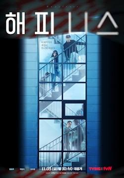

01
The Big 4
Action · Comedy · Crime
The Big 4 adalah film aksi komedi Indonesia tentang empat pembunuh bayaran yang kembali beraksi setelah kematian guru mereka. Film ini menggabungkan adegan aksi dengan humor yang khas.
View Movie →MOVIE COLLECTION
A collection of movies I like
MY COLLECTION
Berikut adalah beberapa film pilihan yang saya sukai. Setiap film memiliki cerita, genre, dan karakter yang berbeda. Informasi media streaming dan harga di bawah digunakan sebagai contoh untuk kebutuhan website.
01
Action · Comedy · Crime
The Big 4 adalah film aksi komedi Indonesia tentang empat pembunuh bayaran yang kembali beraksi setelah kematian guru mereka. Film ini menggabungkan adegan aksi dengan humor yang khas.
View Movie →02
Horror · Mystery · Found Footage
Keramat mengikuti sekelompok orang yang melakukan perjalanan untuk membuat sebuah film. Namun, perjalanan tersebut berubah menjadi pengalaman mengerikan ketika mereka mengalami kejadian supernatural.
View Movie →
03
Horror · Mystery · Drama
Setelah kematian ibu mereka, sebuah keluarga mulai mengalami berbagai kejadian aneh di rumah. Perlahan mereka menyadari bahwa kematian sang ibu memiliki hubungan dengan masa lalu keluarga mereka.
View Movie →RECOMMENDATION
Berikut adalah daftar film yang terdapat dalam koleksi beserta genre dan ratingnya.
| Poster | Film | Genre | Rating |
|---|---|---|---|
|
|
The Big 4 | Action, Comedy, Crime | 7.0 / 10 |
|
|
Keramat | Horror, Mystery | 6.9 / 10 |
|
|
Pengabdi Setan | Horror, Mystery, Drama | 6.5 / 10 |

|
Bad Boys | Action, Comedy, Crime | 6.8 / 10 |
|
 |
Happiness | Thriller, Horror, Drama | 7.5 / 10 |
04
Action · Comedy · Crime
Bad Boys menceritakan dua detektif Miami dengan kepribadian yang berbeda yang harus bekerja sama untuk menyelesaikan sebuah kasus narkoba besar. Film ini terkenal dengan aksi dan komedinya.
View Movie →05
Thriller · Horror · Drama
Happiness bercerita tentang penghuni sebuah apartemen yang harus bertahan hidup ketika wabah misterius menyebar dan mengubah manusia menjadi makhluk yang agresif.
View Movie →